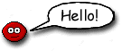
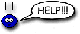
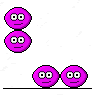
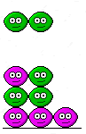
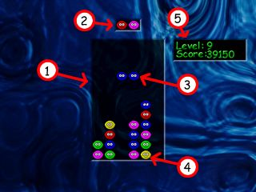

|  |
This little creature is a Bean. The Beans are friendly and cheerful aliens from a far away planet that enjoy touring the galaxy sight-seeing in their spaceships. |
|
Unfortunately for these Beans, some of their spaceships veered off course and crashed into our Moon while they were visiting our galaxy! All of the Beans fell out and are now raining down from the sky! |
 |
The other Bean spaceships immediately began to rescue their fallen friends by teleporting them back to safety in the other spaceships. However, the Beans can only be teleported up from Earth if there are four or more beans of the same colour touching! This is a disaster for the Beans because once they have landed they cannot move because they have no legs!
The Beans are falling from the sky in pairs, you must guide their descent so that they land on the ground next to Beans of the same colour; then they can be teleported back to their spaceships by their friends!
You must help the Beans before Earth is covered by the millions of Beans!
|  |
Use the arrow keys on the keyboard to control the decsent of two falling Beans. The left and right arrow keys move the Beans left and right. The up arrow key rotates the Beans and the down arrow key makes them fall even faster! When four or more Beans of the same colour are touching they will be teleported to safety by their friends! Quickly! - help the Beans! |
|
If you teleport out Beans that are underneath others, then all the Beans above will fall down! If these Beans fall and make another four set of Beans, these too will be teleported out. This is called a teleportation chain and it makes things easier for the Bean rescue ship, and is hence worth many more points to you. The longer the chain of teleports, the higher the score awarded; by carefully placing the falling Beans, you can set up lengthy teleport chains and get much greater scores. |
 |
| 1 The Well This is where all the Beans land, if it gets full you lose! Place the Beans in groups of four or more to make them disappear. |
 | 3 Falling Beans Guide the falling Beans using the arrow keys. |
|||
| 4 Stranded Beans These are the Beans that have already landed. |
|||||
| 2 Next Beans These are the Beans to fall. |
|||||
| 5 Score and Level The higher the level the faster the Beans fall! |
|||||
Beans is a FREE GAME created by Mark Tully of TNT Software using TNT Basic.
Visit tntasic.com for more info on TNT Basic.
You are free to reuse any part of Beans, including the graphics and source code in any TNT Basic game. You may not reuse parts of Beans for any non TNT Basic production.
Beans is © Mark Tully 2001.